Above all else
Ho trascritto la linea principale e ho riportato le armonie dell'accompagnamento sotto forma di sigla per una più rapida lettura.
Spartiti accurati e pronti per studio, pubblicazione o esecuzione.
Soluzioni professionali per musicisti, insegnanti, compositori, cori ed ensemble.
Trascrivo registrazioni audio trasformandole in spartiti accurati e professionali, pronti per studio, esecuzione o pubblicazione.
Ricopio rapidamente e accuratamente spartiti esistenti in formato digitale completamente modificabile.
Hai un brano e vuoi una versione per un organico diverso? Realizzo arrangiamenti su misura per ogni formazione.
Richiedi preventivoLavoro con chiunque abbia bisogno di trasformare la musica in spartito — indipendentemente dal genere o dal livello.
Hai registrato un tuo brano originale e vuoi uno spartito? Trasformo la tua esecuzione in partitura pronta per la pubblicazione o per condividerla con altri musicisti.
Hai bisogno di uno spartito specifico per i tuoi studenti? Realizzo versioni adattate al livello richiesto, con dinamiche e indicazioni pedagogiche.
Vuoi suonare un brano con il tuo gruppo ma non esiste lo spartito per il tuo organico? Creo arrangiamenti su misura con parti separate per ogni strumento.
Trascrivi il brano del vostro matrimonio, la canzone preferita di un amico o una melodia di famiglia: uno spartito personalizzato è un regalo unico e indimenticabile.
Richiedi come regalo →Tre semplici passi per ricevere il tuo spartito professionale.
Carica un link YouTube, Spotify, Google Drive o WeTransfer. Descrivi il progetto nel modulo: riceverai un preventivo gratuito entro 24 ore.
Lavoro interamente a orecchio, senza software di trascrizione automatica o AI, usando Sibelius per riportare ogni nota, dinamica e articolazione con massima precisione.
Ricevi la partitura in tutti i formati richiesti (PDF, Sibelius, MusicXML, MIDI). Le revisioni sono illimitate e senza costi aggiuntivi fino alla tua piena soddisfazione.
Ogni partitura viene creata con cura e precisione.
Ogni nota, dinamica e indicazione agogica è trascritta con massima cura e attenzione.
Utilizzo un software professionale per risultati di qualità editoriale.
Consegna in PDF, Sibelius, MusicXML e MIDI in un unico pacchetto completo.
Se hai bisogno di informazioni o chiarimenti sarò felice di aggiornarti durante il processo.
Rispetto le scadenze concordate, sempre e senza eccezioni.
Sono così sicura della soddisfazione del mio cliente che garantisco sempre, per ogni singolo progetto, revisioni illimitate senza costi aggiuntivi.
Il costo finale dipende dalla complessità del brano. Il preventivo è sempre gratuito — scrivimi per un'offerta personalizzata.
Voce, strumento singolo, melodia con o senza accordi o testo.
Brani per pianoforte, voce e piano, ensemble da camera, jazz combo.
Big band, orchestra da camera, ensemble con 5 o più strumenti.
Hai un progetto particolare? Contattami per un preventivo gratuito e personalizzato entro 24 ore.
Esempi di spartiti realizzati per clienti provenienti da tutto il mondo.
Ho trascritto la linea principale e ho riportato le armonie dell'accompagnamento sotto forma di sigla per una più rapida lettura.
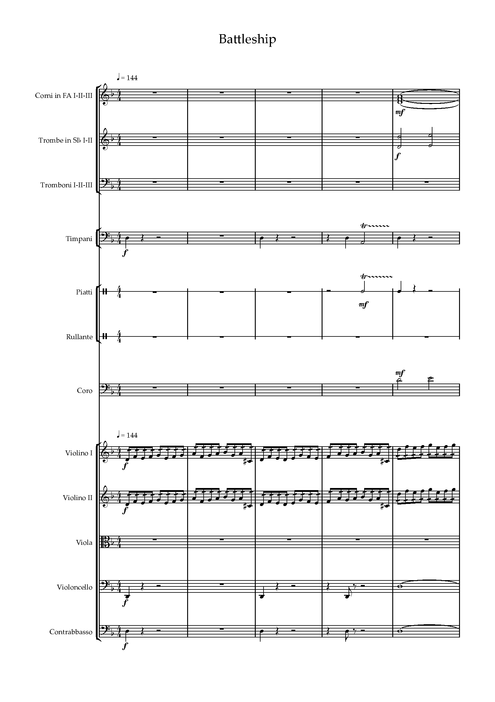
Ho trascritto l'intero organico orchestrale, comprendente: ottoni (Cor., Trb., Trbn.), percussioni (Timp., Piat., Rull.), coro e archi (Vl.I, Vl.II, Vla., Vc., Cb).

Il cliente ha fornito una sua versione personale di questo famosissimo brano, richiedendomi di trascrivere con esattezza gli abbellimenti che effettuava con la voce e la parte di pianoforte che lo accompagnava.
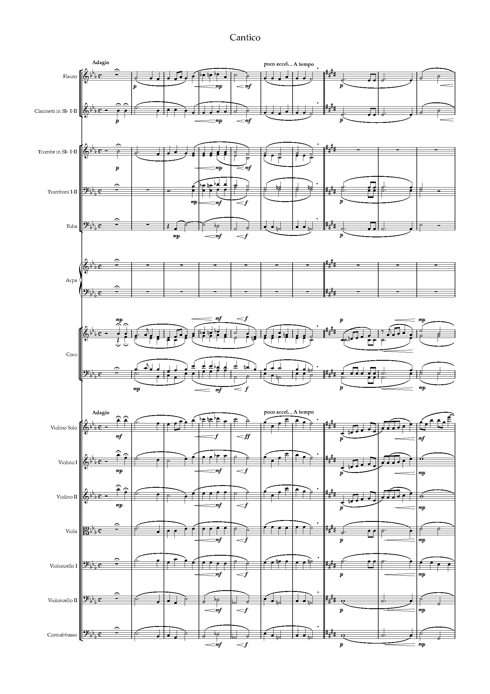
Ho trascritto questo denso Adagio orchestrale, ricco di cambi di tonalità e di tempo, rispettando accuratamente ogni parte e curando la revisione finale del lavoro con l'aggiunta di dinamiche e segni di espressione.
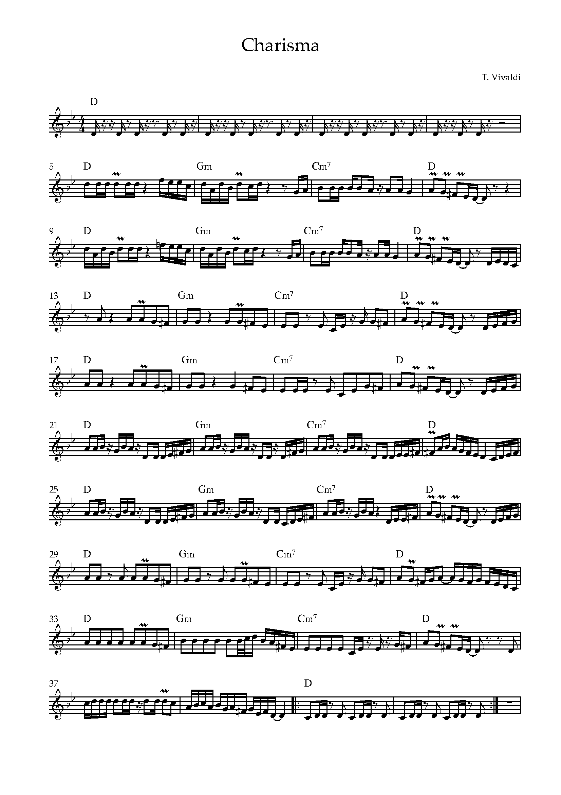
Il cliente ha fornito una registrazione completa del brano chiedendomi di trascrivere la melodia principale eseguita dal sassofono contralto e gli accordi.
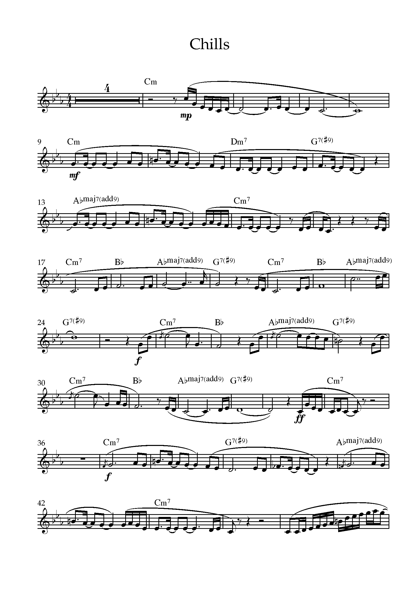
Il lavoro richiestomi prevedeva la trascrizione di una melodia principale dal ritmo variabile, ricca di abbellimenti, con annessi accordi di accompagnamento, compresi di tutte le estensioni.

Questo progetto ha previsto la trascrizione di un lungo brano pianistico, della durata di oltre dieci minuti. Ciò ha permesso l'estrapolazione del file MIDI e della realizzazione di una simulazione realistica di una registrazione di qualità tramite l'utilizzo del software Ableton Live 12 Suite.

Partendo dal video YouTube originale, ho realizzato su richiesta del cliente un accompagnamento pianistico di media difficoltà di questo brano, riportando anche la parte della voce.

Ho trascritto questo meraviglioso brano pianistico, scritto da Alessandra Toni, la quale mi ha fornito il file WAV della registrazione della sua esecuzione chiedendomi di realizzare una partitura completa e pronta per la stampa.

L'Adagio trascritto prevedeva una parte di pianoforte e arpa (riportate sullo stesso rigo come richiesto dal committente), accompagnata da un tappeto sonoro di archi.

Ho realizzato la partitura completa di questo lied da camera trascrivendo la parte della voce e quella del pianoforte. In seguito, ho aggiunto anche il testo in tedesco, fornitomi dal cliente.

Questo brano pop è stato creato dal cliente grazie all'utilizzo di un'intelligenza artificiale. Mi è stato poi chiesto di trascrivere la voce e l'accompagnamento esattamente come risultano nel file mp3. L'organico prevedeva: cantante, pianoforte, chitarra elettrica, basso e batteria.

Ho realizzato la partitura completa di questo brano per pianoforte e piccola orchestra, scritto dal pianista, compositore e produttore Kiann.

Il cliente che mi ha commissionato la trascrizione di questo brano orchestrale è sempre rimasto molto soddisfatto dalle partiture che gli ho fornito. Per questo progetto mi è stato chiesto di riportare su Sibelius le parti degli ottoni, del rullante, della voce solista, del coro (senza testo) e di tutti gli archi.

Partendo dalla canzone originale che si trova su YouTube, ho realizzato un arrangiamento pianistico che riporta la parte della voce, i cori secondari e l'accompagnamento.

Ho trascritto questa colonna sonora orchestrale riportando esattamente le parti di ciascuno strumento, come nel riferimento audio. Su richiesta, ho aggiunto dinamiche, articolazioni e segni di espressione.

Lo spartito mostrato è uno studio per pianoforte, trascritto nota per nota e arricchito dagli accordi scritti sotto forma di sigle, come richiesto dal cliente. Ho annotato accuratamente dinamiche e articolazioni basandomi sull'audio fornito.

Per la trascrizione di questo famoso brano di Vince Giordano ho seguito le indicazioni fornitemi dal cliente: «Nelle parti strumentali, riporta in partitura la parte di tromba, in quelle cantate scrivi la melodia della voce e il testo.»

Il cliente mi ha inviato un file mp3 in cui eseguiva questo Andante per pianoforte. Mi ha richiesto di trascrivere a orecchio quello che aveva suonato, così da preparare uno spartito da poter poi offrire in dono.

Un prete amante della musica, molto abile a suonare, cantare e comporre ma incapace di utilizzare la notazione musicale moderna per poter far eseguire le sue opere ad altri musicisti, mi ha chiesto di trascrivere alcuni frammenti ed inni ad orecchio, usando come riferimento delle sue registrazioni.

Il cliente mi ha chiesto di trascrivere per pianoforte questo brano, includendo la parte della voce, l'accompagnamento e il testo.
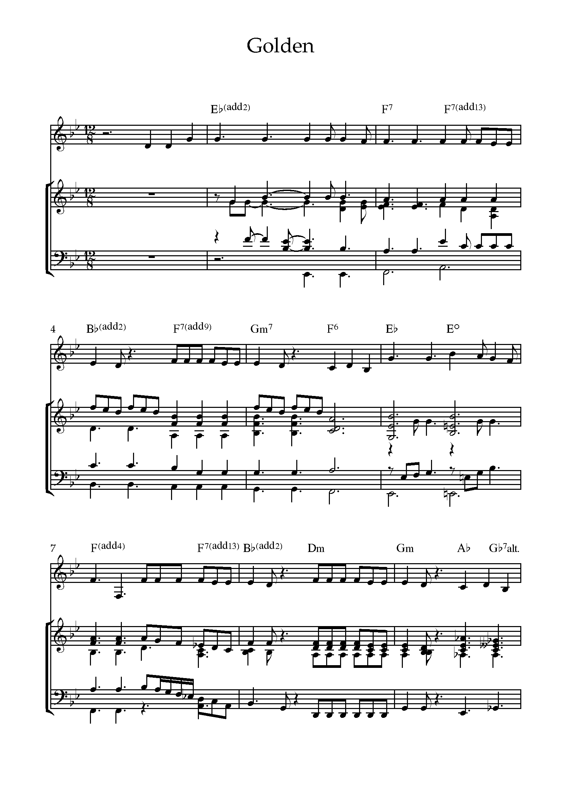
Ho trascritto una versione cover, armonizzata per cinque voci, della canzone di Huntr/x «Golden». Nella partitura ho riportato con esattezza ogni parte, annotando anche gli accordi che sono venuti fuori dalla sovrapposizione delle linee melodiche.

Ho trascritto la versione musicale del mantra «Om Tare Tuttare Ture Soha», facilmente reperibile su YouTube sul canale Rigzen Vajra Lama.

Ho realizzato su richiesta un arrangiamento per pianoforte di questa canzone cantata dal gruppo (G)-IDLE. La parte è pensata per un'allieva di livello base-intermedio.

La partitura che aveva a disposizione il cliente non coincideva con la base che gli era stata fornita. Il mio compito è stato quello di ricostruire uno spartito affidabile, perfettamente coincidente con l'accompagnamento in mp3.

Ho trascritto accuratamente le parti di voce, chitarra, basso, piano e batteria di questa canzone sacra generata in genere pop da un'intelligenza artificiale.
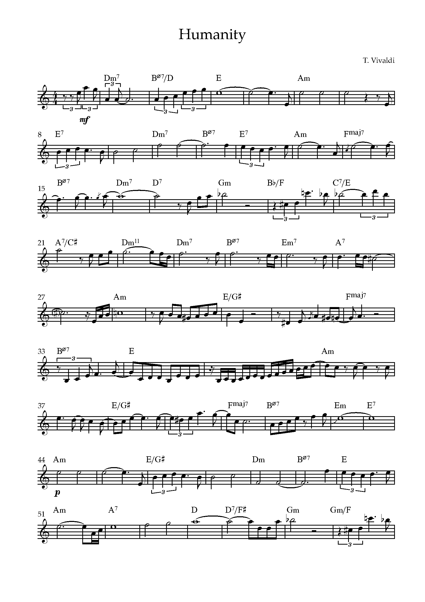
Ho trascritto la parte di sax alto di questa e altre numerose composizioni realizzate da Tommaso Vivaldi. Seguendo le sue indicazioni, ho riportato la melodia principale e le sigle degli accordi che venivano fuori ascoltando l'accompagnamento.

L'inno è stato composto interamente dal prete che mi ha chiesto di trascriverlo. Mi ha fornito l'mp3 di una sua esecuzione all'organo e mi ha chiesto di realizzare una partitura completa.

Questo è un altro inno che ho trascritto per il prete compositore.

Ho realizzato la partitura completa di questo inno, riportando tutti i versi delle tre strofe al di sotto della parte vocale, come richiesto dal committente.

Ho trascritto quest'inno polifonico, riportando su partitura le voci del soprano, del contralto, del tenore e del basso, insieme alla parte della tastiera che accompagna.
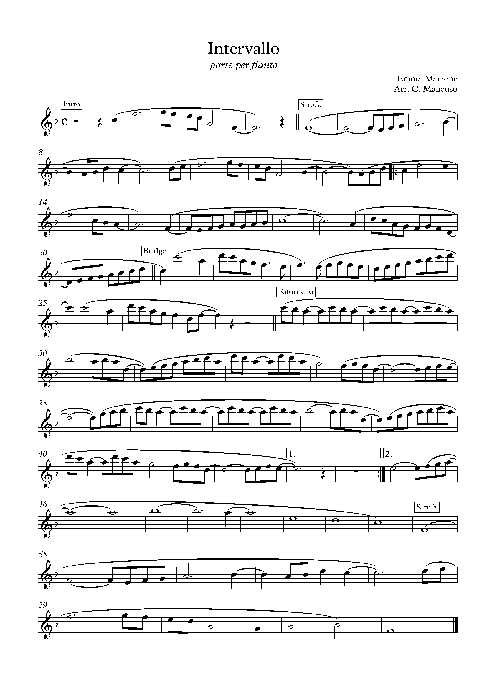
Di questa famosa canzone di Emma Marrone ho estrapolato le parti principali dello strumentale, creando una parte per flauto traverso unica da suonare come accompagnamento assieme alla voce e a un altro strumento che offrirebbe supporto armonico.

Ho trascritto una cover per pianoforte di questa bellissima canzone di Franco Battiato, realizzata e suonata dal cliente.

Il file audio originale di questo brano è stato generato da un'intelligenza artificiale. Mi è poi stato chiesto di realizzare una partitura completa a partire dall'mp3 fornitomi, al fine di poterla poi eseguire con strumenti e voci vere.

Ho trascritto la voce principale di questa canzone, assieme alle parti di pianoforte, violino, violoncello e basso, come richiesto.

Ho trascritto il tema principale del videogioco «Epic Mickey» di Jim Dooley per un allievo di pianoforte che desiderava eseguirlo e non trovava la partitura da nessuna parte.

Questa partitura mostra un mantra di Karunesh facilmente reperibile su Spotify e YouTube. Il lavoro che mi è stato affidato prevedeva la realizzazione di una partitura completa di tutti gli strumenti utilizzati.

Flauto, tromba, shaker, tamburello, arpa, basso elettrico e archi: questo è l'organico completo che mi è stato chiesto di trascrivere con accuratezza, ad orecchio, avendo come riferimento un file mp3. Questo progetto prevedeva anche che annotassi i tempi, le dinamiche e le articolazioni.

Partendo sempre da un audio mp3 di riferimento fornito dal cliente, ho trascritto nota per nota questa partitura per pianoforte.

Della famosa canzone di Naska, ho realizzato un arrangiamento per pianoforte solo, per permettere al cliente di poterla suonare e dedicare come regalo.

Ho trascritto interamente a orecchio questo concerto di stampo classico per chitarra, clarinetto e orchestra, senza l'utilizzo di alcun software o AI e garantendo la massima qualità e una notazione accurata di articolazioni e dinamiche.

Per questo lavoro il cliente mi ha richiesto di trascrivere lo stacchetto musicale cantato da John Di Maggio in un episodio della famosa serie animata «Adventure Time».
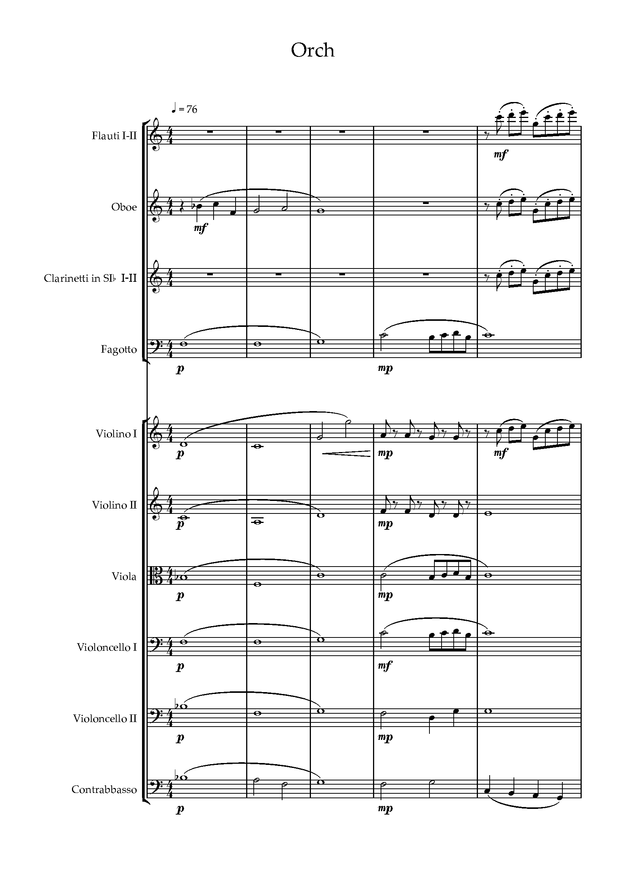
Ho realizzato la partitura di questo brano per legni e archi partendo da un audio mp3 di riferimento, curando dinamiche, articolazioni e segni di espressione.

L'opera che mi è stato chiesto di trascrivere era destinata a far parte di un musical completo. La parte in questione prevedeva un quartetto vocale, con una voce guida principale e le altre di accompagnamento.
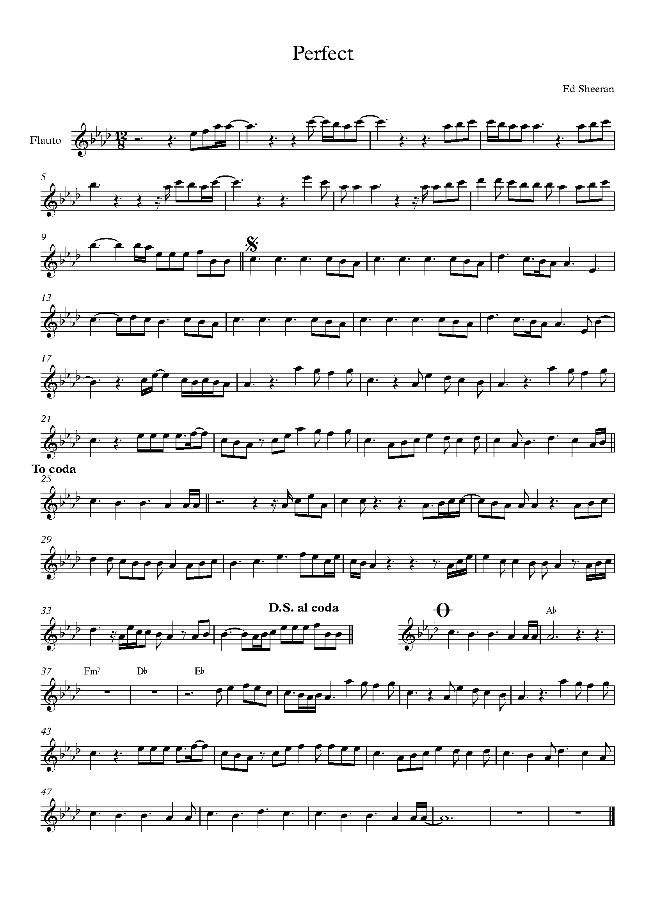
Del famoso brano di Ed Sheeran ho realizzato una parte per flauto traverso, che riporta esattamente ciò che fa la voce. Ho utilizzato i segni di ripetizione in modo tale da far rientrare l'intera parte in un'unica pagina.

Per quest'opera mi è stato chiesto di trascrivere accuratamente, oltre alle note del pianoforte, anche le dinamiche, le articolazioni, i segni di espressione e i pedali. Ho inoltre curato l'impaginazione per delle comode svoltate di pagina.

La partitura in questione prevede un denso organico orchestrale, con legni, ottoni, archi, arpa e pianoforte trascritti su uno stesso rigo e armonica. Tutto è stato trascritto con accuratezza a orecchio.
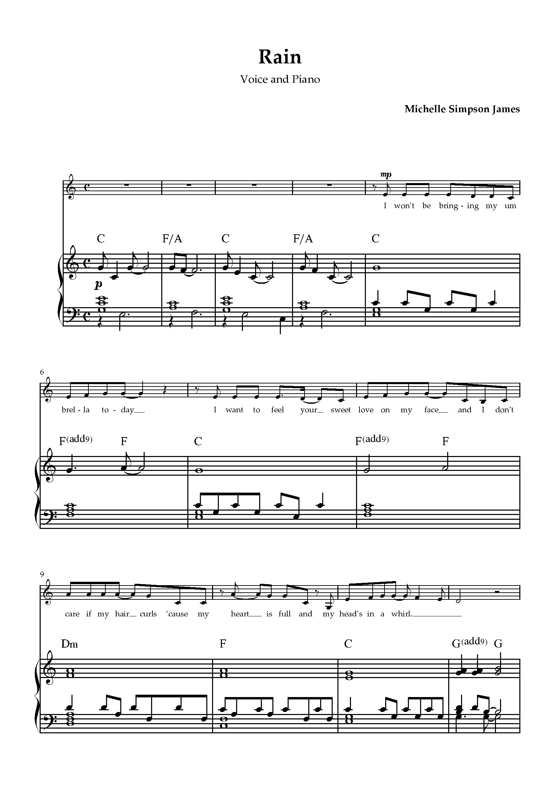
Ho realizzato una partitura completa per voce e piano della canzone originale composta da Michelle Simpson James, ovvero la cliente che ha composto il brano e che mi ha commissionato questo lavoro.
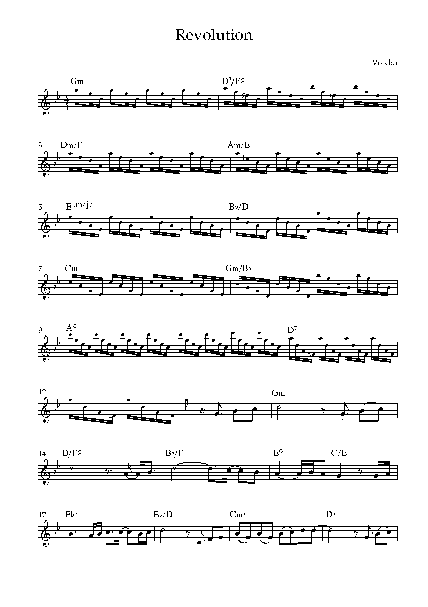
Per questa trascrizione avevo il compito di trascrivere la parte di sax alto e gli accordi. Dato che c'erano molte parti riempitive strumentali, ho annotato anche quelle sotto forma di note guida, in modo da facilitare un'ipotetica esecuzione in gruppo.
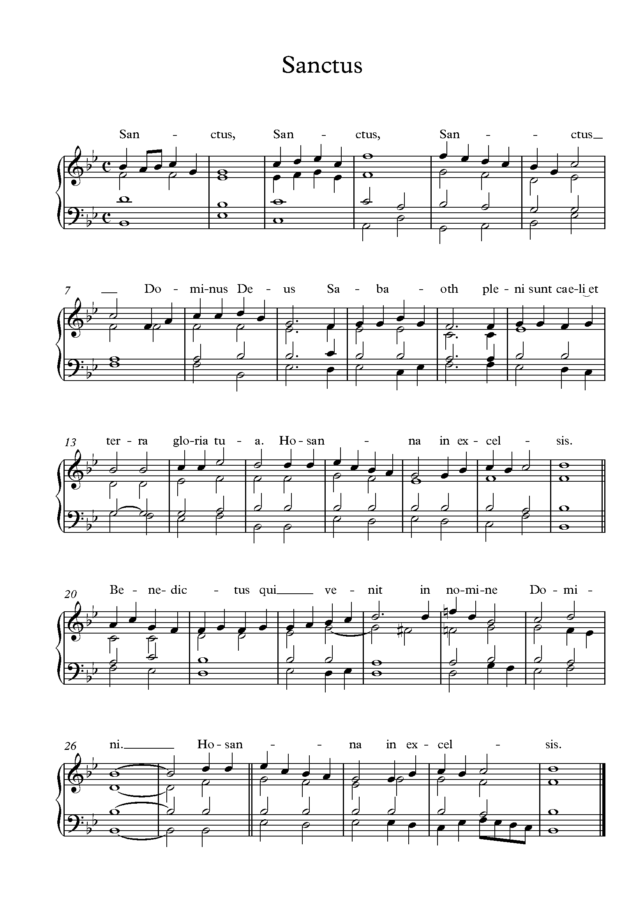
Ho riportato su due righi (chiavi di violino e basso) la trascrizione di questo «Sanctus», scrivendo anche il testo fornitomi dal cliente.

Questo è un altro importante lavoro orchestrale che ho accuratamente trascritto da mp3 a partitura tramite Sibelius.

La trascrizione di questo brano mi è stata commissionata dallo stesso pianista che lo ha composto. Ho ricevuto un file audio e un MIDI ritmicamente inesatto. Ho consegnato una partitura completa in PDF pronto per la stampa e un file MusicXML modificabile, come richiesto.
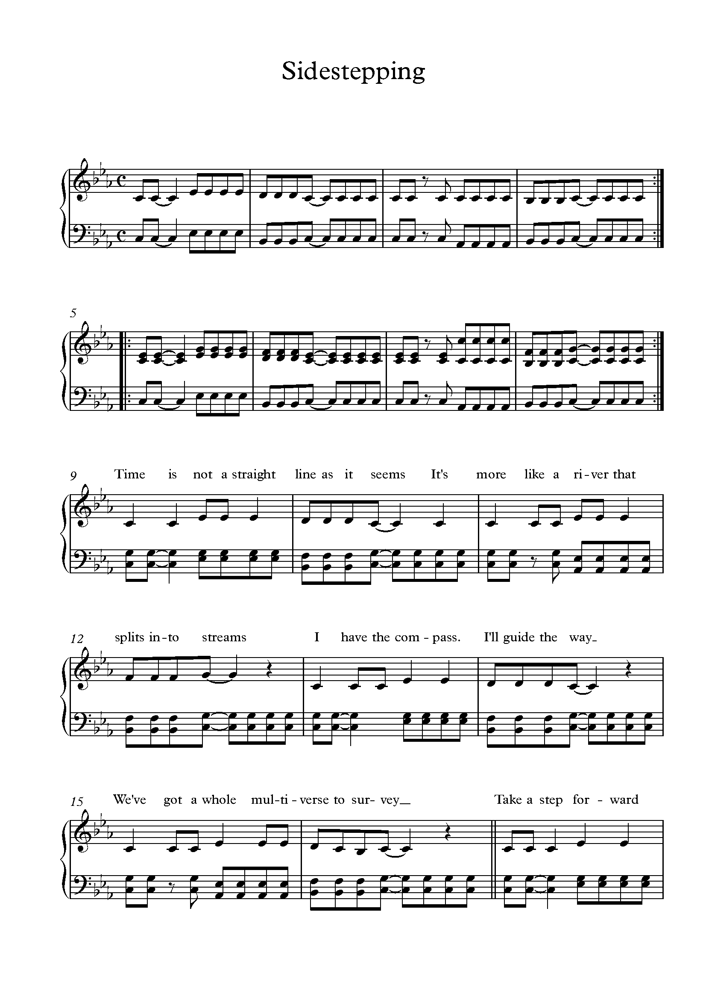
Per questo lavoro mi è stato chiesto di realizzare una partitura di pianoforte che racchiudesse la parte della voce (con annesso testo), l'accompagnamento e il basso.

L'mp3 di riferimento di questo brano è stato creato per essere eseguito in un musical. Al fine di un'esecuzione dal vivo, mi è stato chiesto di trascrivere la parte della voce e i principali accordi. Ho segnato anche le note guida della parte di accompagnamento che emerge quando la cantante tace.

Per questo progetto mi è stato fornito il link YouTube di una celebrazione eucaristica in cui, durante la comunione, veniva eseguito questo brano da un piccolo complesso strumentale. A partire dal riferimento audio, mi è stato chiesto di realizzarne un arrangiamento per violino e pianoforte.
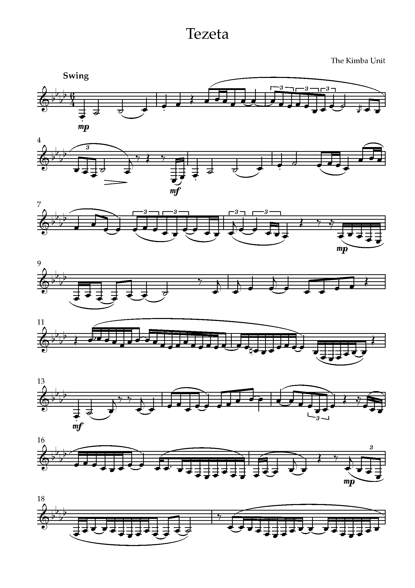
Ho trascritto questo brano di «The Kimba Unit» a partire dal minuto 01:30 del video originale presente su YouTube.

Per questo progetto mi è stato chiesto di trascrivere la parte della voce e di aggiungere le sigle degli accordi di questo famoso standard jazz.

Ho riportato su Sibelius la parte principale di sassofono e le sigle degli accordi.

Da una clip dell'omonima serie, ho estratto la partitura del quartetto d'archi che apre la scena iniziale di un episodio.

Ho trascritto e ridotto su pochi righi un estratto di quest'opera composta da Alexandre Desplat per agevolare una lezione di una docente di conservatorio.

Il singolare brano prevedeva una parte iniziale di Konnakol, trascritta in notazione occidentale su richiesta del cliente.

Il corposo organico di questo brano comprende: legni, ottoni, percussioni, coro e archi. A partire da un file audio WAV ho realizzato una partitura accurata.

Il lavoro commissionatomi prevedeva la realizzazione di una partitura musicale, completa di dinamiche, cambi di tempo e articolazioni, a partire da un file audio generato da un'AI.

Ho accuratamente trascritto a orecchio, nota per nota, il brano per pianoforte di Hiroko Sebu, facilmente reperibile su YouTube come «(the end title)».

Dopo una lunga introduzione del pianoforte solo, questo concerto prevede l'alternanza e la sovrapposizione di vari strumenti. Il mio compito è stato quello di realizzare una partitura accurata partendo da un file audio.

Ho trascritto questo brano per clarinetto e archi in poco tempo, data la brevità e l'organico ridotto. Ho aggiunto come sempre i segni di espressione, le articolazioni e le dinamiche.

Come richiestomi dal cliente, ho trascritto la parte dei tre sax alti di questo brano di Andy Harlow a partire dal minuto 01:17.
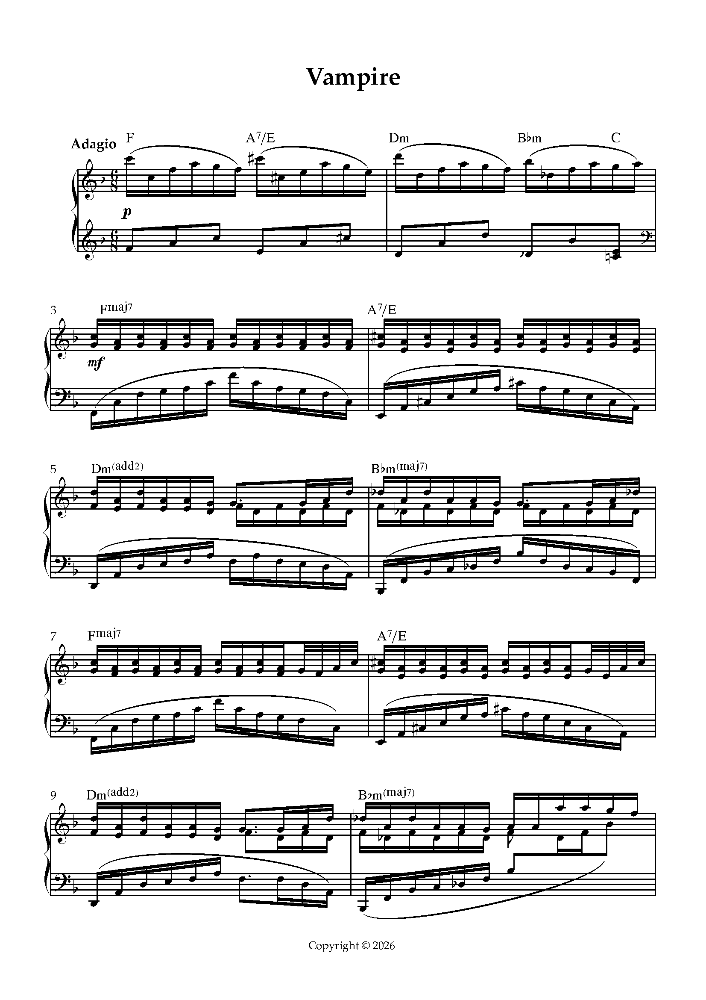
Usando come riferimento esclusivamente un file mp3 ho realizzato una partitura completa di note, legature, dinamiche e accordi di questo brano per pianoforte.

Ho trascritto accuratamente nota per nota ogni singolo strumento di questo concerto per violino e orchestra, preparando una partitura unica e curando anche le parti staccate.

Mi è stato chiesto di trascrivere questo brano dal conosciuto sassofonista e compositore Tommaso Vivaldi, al fine di poter fornire la parte ai suoi studenti.

L'organico di questo brano prevede: corno, arpa, violino solo e archi. Ho trascritto le parti singolarmente a orecchio, dal formato mp3 a quello MusicXML, realizzando in seguito una partitura definitiva.

Su richiesta di un insegnante di violino, ho realizzato un arrangiamento semplice per dei ragazzi principianti.

Di questo brano ho trascritto su richiesta del cliente esclusivamente la mano destra del solo di pianoforte di Tommy Flanagan, dal minuto 00:48 al minuto 02:53.

Usando come riferimento un video presente su Instagram dell'esecuzione di questo brano, ho trascritto la parte di violino e quella di pianoforte così com'erano state arrangiate in quella versione.
"Camilla is absolutely phenomenal and I highly recommend her. Her communication was clear and professional from the start, and she transcribed my complex piece with outstanding accuracy, capturing every nuance with real musical understanding. The score was clean, beautifully formatted, and ready to use straight away. An easy 10 out of 10."2026
"Working from an mp3 and a midi-file along with the composer's vision, Camilla was able to deliver the accurate music sheet we needed. Her attention to details, professionalism, and openness to constructive feedback made the whole experience smooth and enjoyable. We will be back with no hesitation."2026
"Camilla did an outstanding job creating sheet music for my original song from an MP3. She produced accurate charts for every instrument in our praise band, including detailed lead vocal notation. Beautifully formatted, easy to follow, and completely aligned with what I envisioned. I highly recommend Camilla for anyone needing precise, high-quality sheet music."2025
"Excellent transcription work. Fast, accurate, and musically insightful. Clearly listened carefully to the music. Very responsive and thoughtful with revisions. The process helped me improve my own listening, which says a lot. Very professional and a pleasure to work with."2025
"Camilla ha trascritto in digitale per me dei brani dall'audio. Ha fatto un lavoro eccezionale con precisione e una competenza da vera professionista. Una musicista dall'orecchio fine! Lavorerò sicuramente ancora con lei."2024
"I have placed several orders and I have always been completely satisfied with the results. Reliable and accurate, Camilla has become my go-to transcriptionist."2025
5.0 ★ · Oltre 200 recensioni verificate
Leggi tutte le recensioni su Fiverr →Musicista, trascrittrice e compositrice. Pianista e flautista.
Sono Camilla Mancuso, musicista e trascrittrice musicale professionista. Grazie al mio orecchio assoluto e ai miei studi classici in pianoforte, flauto e composizione, realizzo spartiti accurati utilizzando l'ultima versione del programma di notazione Sibelius e collaboro con musicisti provenienti da diversi paesi del mondo.
La mia esperienza su centinaia di partiture mi permette di affrontare qualsiasi stile musicale con precisione e sensibilità, dalla musica classica alle colonne sonore e dalla musica pop agli arrangiamenti orchestrali.
Descrivimi il tuo progetto e riceverai un preventivo gratuito via email entro 24 ore.
Le risposte alle domande più comuni sul servizio di trascrizione.
Accetto qualsiasi formato audio o video: mp3, WAV, m4a, FLAC, OGG, file video. Puoi anche condividere un link a YouTube, Spotify, SoundCloud, Google Drive, WeTransfer o Dropbox.
No. Trascrivo interamente a orecchio, nota per nota, senza l'utilizzo di software di trascrizione automatica o intelligenza artificiale. Questo garantisce la massima qualità, precisione e attenzione alle sfumature musicali.
I tempi variano in base alla complessità e alla durata del brano. In genere consegno entro 3–7 giorni. Per i progetti più lunghi o urgenti concordiamo insieme una scadenza prima di iniziare.
Sì, le revisioni sono illimitate e senza costi aggiuntivi per ogni progetto. Continuo a lavorare fino a quando non sei completamente soddisfatto del risultato.
Assolutamente sì. Oltre alla trascrizione fedele, realizzo anche arrangiamenti personalizzati: adattamenti per organici diversi, semplificazioni per principianti, versioni per pianoforte, flauto, voce e molto altro.
Puoi ordinare direttamente su Fiverr o PaidTabs, che offrono pagamento sicuro con carta, PayPal e altri metodi. In alternativa puoi contattarmi via email per concordare le modalità direttamente.